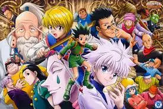
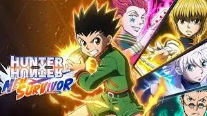
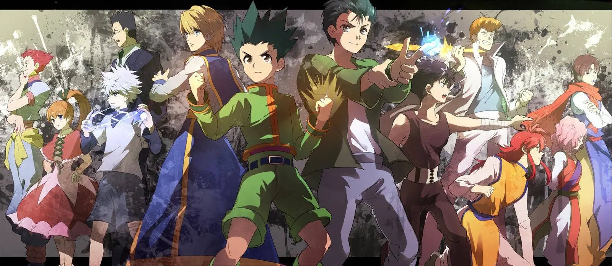
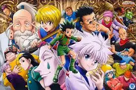
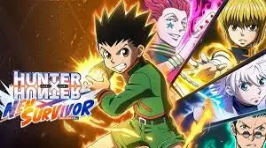
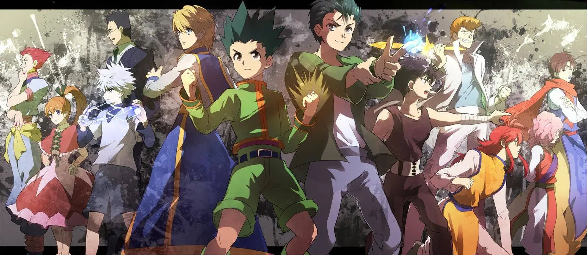
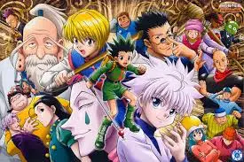
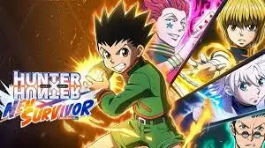
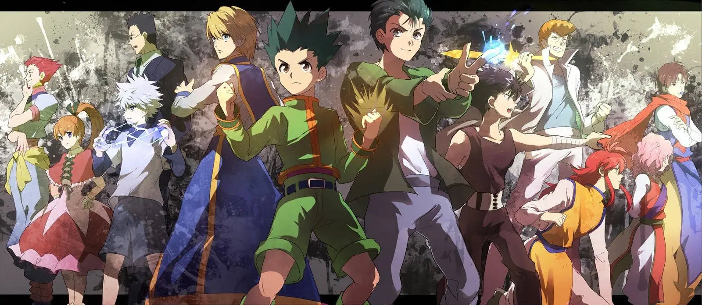

Hunter × Hunter es un anime y manga japonés creado por Yoshihiro Togashi.
La historia sigue a Gon Freecss, un niño que sueña con convertirse en Hunter, una élite de personas con habilidades especiales que se dedican a misiones peligrosas como explorar territorios desconocidos, capturar criminales, buscar tesoros o descubrir criaturas extrañas
Gon Freecss es el protagonista principal de Hunter × Hunter Es un niño alegre, valiente y muy decidido que vive en la Isla Ballena. Su mayor sueño es convertirse en Hunter para encontrar a su padre, Ging Freecss, un Hunter legendario que lo dejó al cuidado de su tía para seguir viajando por el mundo.""


